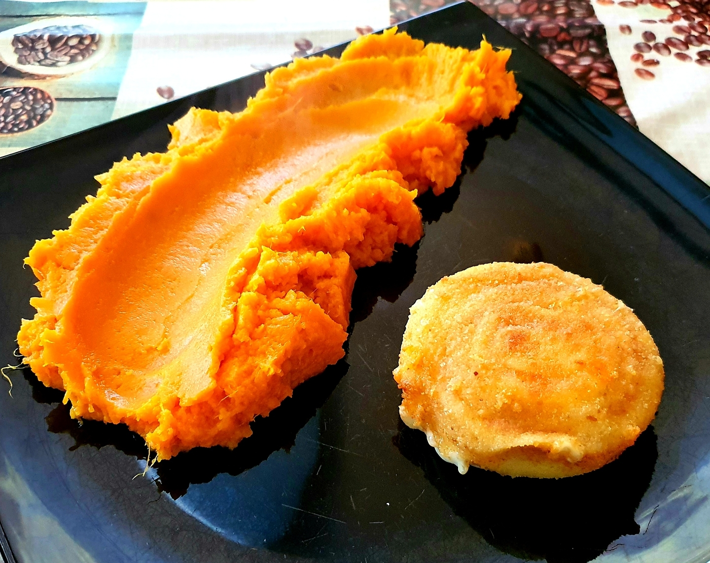

Vyprážaný syr podľa @klaudiaotcenasova — Normy Jedál
Vyprážaná parenica so šunkou a batátovým pyré 😍
#fried #cheese with #ham and #sweetpotato mash #lunchideas #slovakia #inspiration #whattocook #cooking #cookingwithlove #covarit na #obed #parenica #vyprazanysyr #bataty #inspiracie #varenie #varenieslaskou